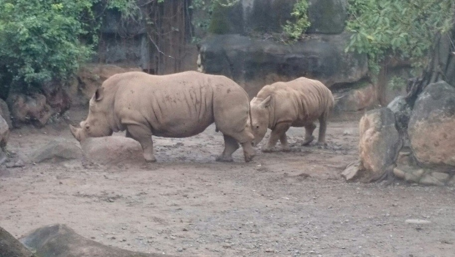

馬來貘為中大型哺乳動物，前肢有四趾，後肢有三趾。一般而言，馬來貘體長為1.8至2.2公尺之間，站立高度有90至105公分高，成體一般重量約在230至310公斤之間，最大個體可以達到400公斤；雌性的馬來貘通常比雄性的體型來得大，身體渾圓可愛，皮厚毛硬，全身除中後段有如穿著肚兜、包著尿布的白色體毛外，其牠部位皆呈黑色。小貘出生時，身體有條紋狀的保護色、棕毛。其貌「似豬不是豬、似象不是象」，故也有古書稱之「四不像」
犀牛是犀科（學名：Rhinocerotidae）動物的總稱，屬哺乳綱奇蹄目，主要分布於非洲和東南亞。是最大的奇蹄目動物，也是僅次於大象體型大的陸地動物。所有的犀牛基本上都是腳短和身體粗壯。體肥笨拙，體長2.2～4.5米，肩高1.2～2米；體重2800～3000公斤，皮厚粗糙，並於肩腰等處成褶皺排列；毛被稀少而硬，甚至大部無毛；耳呈卵圓形，頭大而長，頸短粗，長唇延長伸出；頭部有實心的獨角或雙角（有的雌性無角），起源於真皮，角脫落仍能復生；無犬齒；尾細短，身體呈黃褐、褐、黑或灰色。

是一屬生長在非洲的反芻偶蹄動物，共有四個物種，是現存世界上最高的陸生動物。一般雄性個體高達4.8到5.5米高，重達900公斤。雌性個體一般要小一些。 長頸鹿是非洲特有的動物，與鹿和牛有親緣關係，但屬於不同的科，即長頸鹿科。長頸鹿科包括長頸鹿和霍加狓兩種動物。